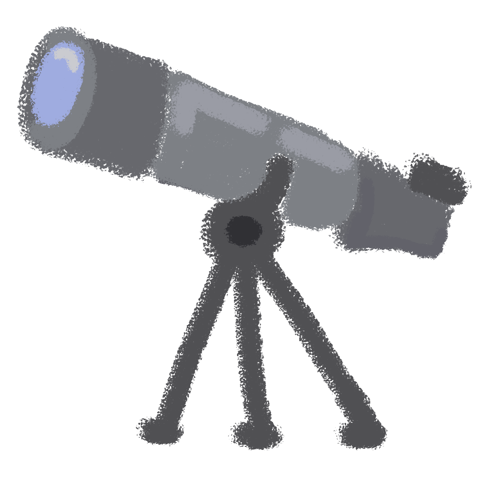

Diseñar e implementar una estrategia pedagógica interdisciplinar con enfoque de derechos, que utilice el arte, la creatividad y la multimedia para construir entornos protectores que fomenten la participación, la expresión libre y la educación para la paz en niñas, niños y adolescentes de Ciudad Bolívar.

Para los próximos años, Infancia que Resiste se proyecta como un referente comunitario en la creación de entornos protectores que integren educación, territorio y tecnología. Un modelo replicable donde la multimedia sea el puente entre la memoria del barrio, la participación juvenil y la proyección digital del territorio.